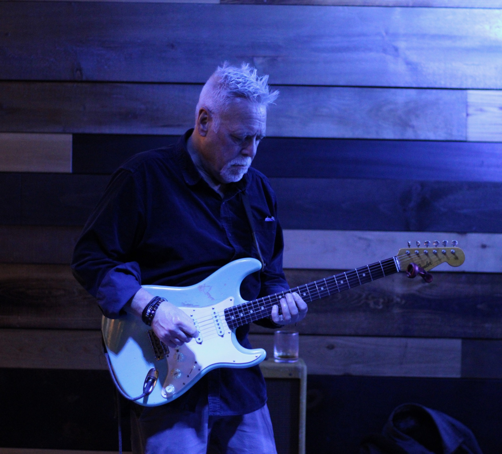

Fred
Instrument: Guitar
Location: Holden, ME
Style: Blues / Rock / Funk
Availablilty:Ask
View Profile
Jack Duggins (Purgatory Jack)
Instrument: Rhythm Guitar / Vocals
Location: Gardiner, ME
Style: Country / Light Rock
Availablilty:Average 150 gigs per year-Solo
Influences:John Prine, George Strait, Randy Travis, Joe Diffie, Zack Top
View Profile
Thomas Charles Clukey
Instrument: Guitar
Location: Saco, ME
Style: Americana, Folk, Singer Songwriter
View Profile
Niomi Larrivee / Omi
Instrument: Vocals
Location: Augusta, ME (will travel)
Style: Rock / Alternative / New Rock / Country / Pop / R&B / Blues
Looking to Join: Alternative / Alt-Country / Rock band
View Profile

SquirrelNutz
Location: Bar Harbor • Maine
Instrument: Drums
Availability: Negotiable
Influences: Shinedown, Metallica, Garth Brooks, Styx, Night Ranger
View Profile

The Maine Piano Man
Instrument: Piano, Organ, Keyboards
Location: Maine
Style: Standards, Pop, Rock, Jazz, Classical, Blues, Classic, Original
View Profile
George Lazos
Instrument: Guitar/Voice
Location: Kennebunk, ME
Style: Alternative/Country
View Profile


PK
Instrument: Multi-instrumentalist
Location: Harpswell, ME
Style: Rock / Progressive
Availability: Contact for details
View Profile